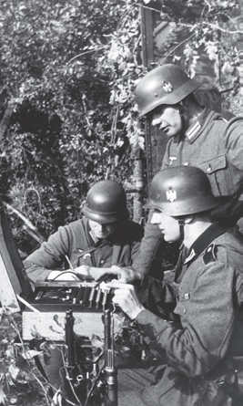
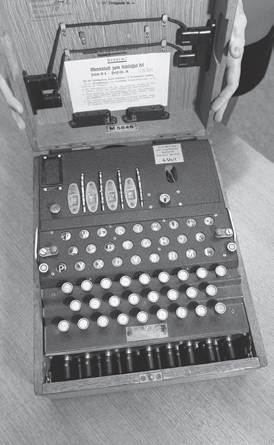
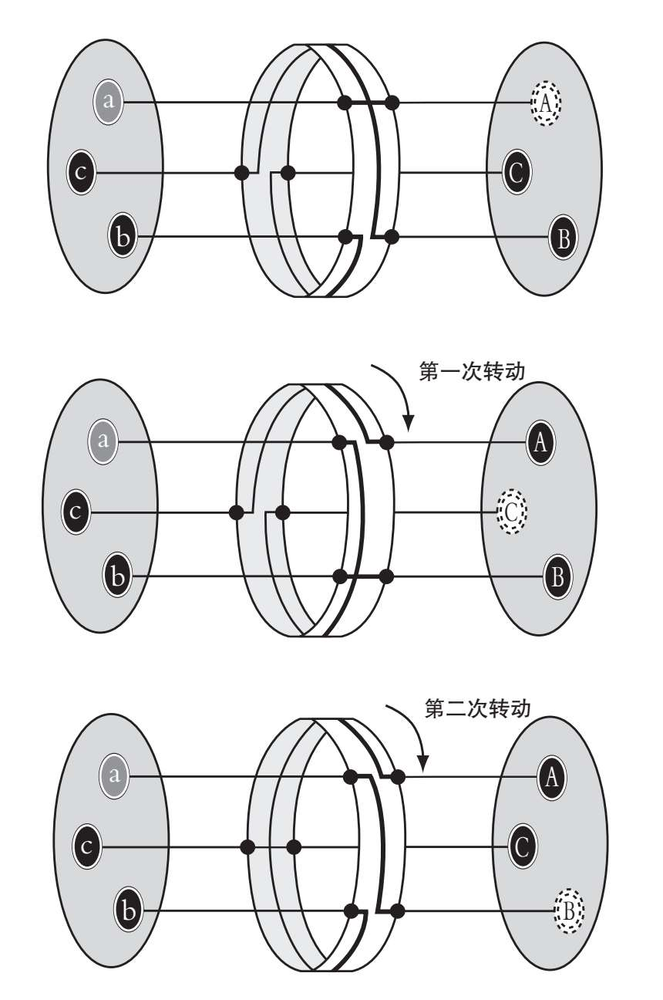
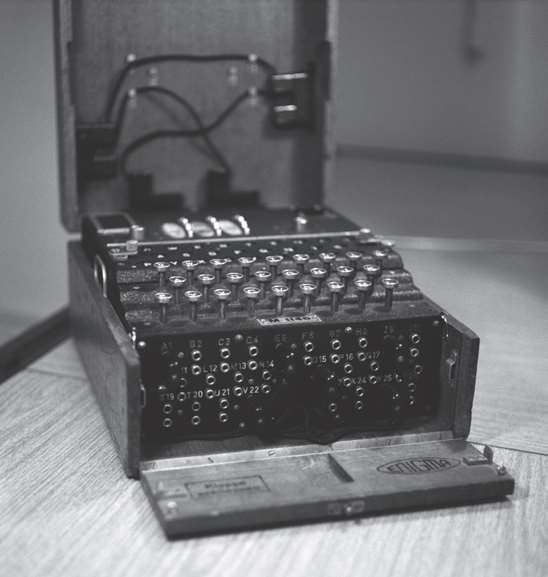
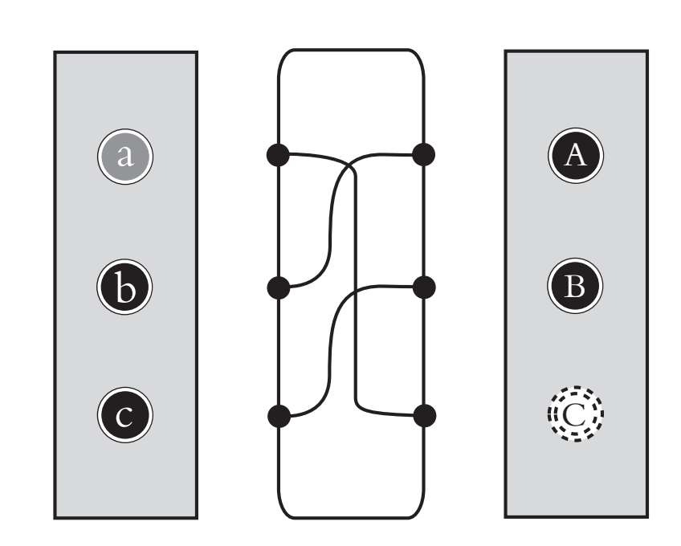
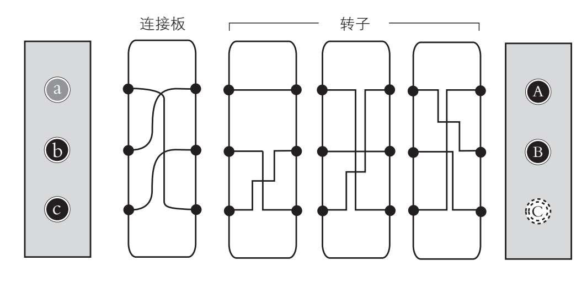
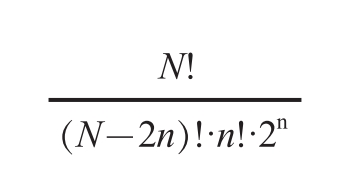
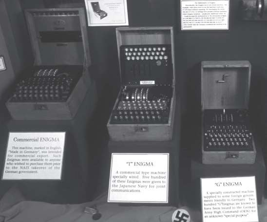
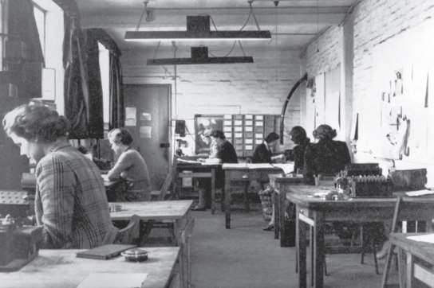
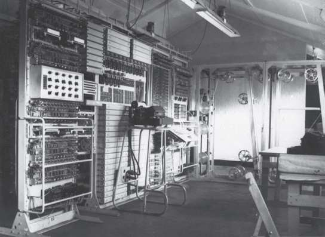

1919年，德国工程师亚瑟·谢尔比乌斯（Arthur Scherbius）为他发明的机器申请了专利，这台机器可以产生完全保密的通信，机器的名字就是“恩尼格码”（Enigma，意为“谜”），后成为“军事秘密”的代名词。恩尼格玛精密复杂，有目共睹，但实际上，它只是阿尔伯蒂圆盘的改进版，往下看大家就明白了。
因它使用起来相对方便，因加密过程复杂，“二战”期间，德国政府用恩尼格玛密码机加密了大量的军事通信。
因此，破解恩尼格玛，成为各国政府对抗纳粹德国的头等大事。事实证明，最终盟军情报机构成功破解的信息成为战争取得胜利的关键。破解恩尼格玛基本上是由波兰和英国的情报部门完成的，过程精彩纷呈，引人入胜，其中的主角就包括数学天才阿兰·图灵，后人把他誉为现代计算机之父。成功破解恩尼格玛，也孕育出史上第一台数字计算机，在漫长多彩的军事密码破译史上，书写了最壮丽的篇章。

“二战”战场上，德国士兵在抄录恩尼格玛加密的信息。

四转子恩尼格玛密码机复制品。
恩尼格玛密码机本质上是一种电磁设备，外表与打字机相似。它的特别之处在于，它的机器构件能够改变每次按键的位置，所以即便是同一个明文字母连续打出来，每次的编码几乎也都各不相同。
加密的实际过程相对简单。首先，发送者会根据当时有效的代码本（代码本定期更新）确定一个起始点，设置机器的插件和转子。接着，他打出明文的第一个字母，机器会自动产生一个替代字母并出现在照明盘（最原始的显示器）上，于是就产生了加密信息的第一个字母。
转动第一个转子，将其定位在26个可能位置中的一个。转子的新位置生成字母的新密码，接着信号操作员打出第二个字母，依次类推。要解码这条信息，只需把第二台恩尼格玛密码机的起始参数设置为加密时的参数，然后键入加密字符就可以了。
借助下一页的插图，我们把恩尼格玛的加密机制用简化图的方式呈现出来。在简化图中，转子的字母表只有三个。因此，每个转子只有三个可能的位置，当然真实情况中是26个。
可以看出，恩尼格玛密码机的转子在起始位置时，除了A保持不变外，原始信息中的每个字母都被其他字母替换掉了。加密第一个字母后，转子转动三分之一。此时在新位置，替换的字母相比第一次发生了改变。最后是第三个字母，转子转回起始位置，密码序列出现重复。
标准恩尼格玛密码机的每个转子有26个位置，与26个字母一一对应。也就是说，一个转子能够产生26个不同的密码。所以，转子的起始位置就是密钥。为了增加可能的密钥的数量，恩尼格玛密码机设计了三个转子，彼此机械地连接。

当第一个转子转动后，相邻的转子就会启动另一个，直到所有转子都转完，可能的密码总数为26·26·26=17 576。此外，谢尔比乌斯的设计允许更改转换器的顺序，这样就能进一步增加密码的数量，稍后我们会一窥究竟。

三个转子的恩尼格玛密码机，打开前部可以看到它的连接板。
除了三个转子外，恩尼格玛还有一个连接板，位于第一个转子和键盘之间。连接板使得成对字母在连接转子前就可相互转换，这样又大大增加了加密密码的数量。标准设计的恩尼格玛密码机有6根线，最多能够交换6对字母。下页图演示了连接板的交换操作，同样以简化的方式，只保留三个字母和三根线：

这样，a与C交换，b与A交换，c与B交换。加上连接板，具有三个字母的简化版恩尼格玛密码机的运行过程如下图所示：

看似只增加了一个连接板，但额外能够产生多少密码呢？我们必须要思考从26个字母中选出的6对字母可产生的连接方式的数量。有N个字符的字母表，其中n对字母的转换数量由这个方程计算可得：

在我们的例子中，N=26，n= 6，即能够提供100 391 791 500个组合。
结论是，如果一台恩尼格玛密码机具有三个带有26个字母的转子和一块有6根线的连接板，那么它能提供的密码总数为：
1.参考转子的转数，263=26·26·26=17 576种组合。
2.同理，三个转子（1, 2, 3）彼此交换，能够产生的位置有1-2-3, 1-3-2, 2-1-3, 2-3-1, 3-1-2, 3-2-1；这又增加了6种可能的组合。
3.最终，我们计算出，配备6根线的连接板增加了100 391 791 500个额外的密码。
不同的具体组合数的乘积就是可获得密码的总数：6·17 576·100 391 791 500=10 586 916 764 424 000。因此，恩尼格玛密码机加密一条信息能够产生一万万亿种不同的组合。纳粹德国坚信其安全，因为有最高安全指数的通信。可是，这是一个很大的错误。
任何一个恩尼格玛的密钥首先要确定连接板上的配置，也就是6个可能性的字母交换，比如，B/Z、F/Y、R/C、T/H、E/O和L/J，即第一组连接交换的字母是B和Z，其他同理。其次，密钥透露了转子的顺序，如2-3-1。最后，密钥包括转子的起始方向（如R、V、B，表明了哪个字母位于起点，也叫索引标志）。这些设置都收录在密码本中，而密码本本身也以加密的方式传递，一两天或者接到命令的时候都会更新，比如，特定的密钥是专为特定类型的信息保留的。
有时一天会发送上千条密电，为了避免在一整天内重复使用相同的密码，恩尼格玛操作员在传递密码时会使用一些小技巧，这样他们无须替换共享代码的整个密码本，就可以发送新密码。例如，操作员发送6个字母的信息，根据当天的密码进行编码，实际上就是一组新的转子索引标志，比如T-Y-J。（为增加安全性，发送者对这三个指令编码时执行两遍，因此是6个字母。）接下来，他要根据新设置，对真正的信息进行编码。接收者收到信息后，无法直接用当天的密码解译，但他知道前6个字母实际是设置转子位置的指令。接收者会保持连接板和转子顺序不变，然后就能准确解码信息了。
1931年，盟军情报人员从德国间谍施密特手中取得了第一条关于恩尼格玛的珍贵情报。情报中包含多个关于该机器的使用手册。法国情报机构与施密特进行了接触，随后将情报发给波兰情报机构。波兰密码分析部门——密码局，集中研究施密特带来的情报，并从德方手中偷来多台恩尼格玛密码机。
波兰破译团队会集了大量数学家，这在当时非同寻常。团队中有一位天赋异禀、腼腆、内省的23岁年轻人——马里安·雷耶夫斯基（Marian Rejewski），他注意到德方每天的通信信息中，很多都是以6个字母的密码开头的，于是将注意力集中在这点上。雷耶夫斯基总结出一个理论：密码的后三个字母是前三个字母的新密码，因此，知道第四个、第五个和第六个字母就能找到转子转动的线索。
这个发现看起来微不足道，但雷耶夫斯基就此建立了一套特殊的推理网络，最终破解了恩尼格玛系统。这个过程非常复杂，此处我们不便详细说明，不过事实摆在那儿。几个月后，雷耶夫斯基将需要破解的可能密码的数量从10万亿减少到105 456，这是由转换器的顺序组合和不同的转动方式导致的。为了破解密码，雷耶夫斯基创造了一个仪器，取名为“邦贝”（Bombe），它与恩尼格玛的操作方法一样，在搜索当日密码时，能够模拟三个转子的所有可能性位置。1934年初，波兰密码局破解了恩尼格玛，并能在24小时之内破解任何信息。

不同版本的恩尼格玛密码机。
虽然德国人不知道波兰人已经攻破了恩尼格玛的安全系统，但他们还是对这个已经运行了十多年的系统进行了改进。1938年，恩尼格玛操作员收到两个新转子，加到标准的三个转子机器上，不久后，新型机器又安装了十个连线板。
突然之间，可能的密码数量增加到约159×1018个。单是增加两个转子，就把转子的旋转次数组合从6增加到60，即处于首位的五个转子的任意一个（5个选项）乘以第二位的剩余四个转子的任意一个（4个选项）乘以第三位的剩余三个转子的任意一个（3个选项）=5×4×3=60。虽然波兰密码局的工作人员知道如何破解这种密码，但无法分析十倍于它的新转子配置。
恩尼格玛系统的更新不是随性之举，当时德国已然开始在欧洲的侵略扩张，吞并捷克斯洛伐克和奥地利后，正意图入侵波兰。1939年，欧洲腹地战火四起，波兰沦陷，波兰人把所有的恩尼格玛密码机转移给英国盟军，并告知使用方法。同年8月，英国决定把之前已解散的密码分析部门重新组织起来，位置选在了伦敦郊区的一处名为“布莱切利庄园”的地方。一位密码破译新贵也加入布莱切利庄园，他就是年轻的剑桥数学家阿兰·图灵。图灵在计算机领域享有盛誉，不过当时计算机还处于萌芽阶段，并朝着革命性的全新发展方向敞开了大门。破译改进后的恩尼格玛密码机，后来被证明是朝计算机大踏步迈进的推动力。

布莱切利庄园内忙碌的专家，恩尼格玛系统在此被破解。
布莱切利庄园的专家将注意力集中在加密文本的片段和疑似对应的明文片段上。比如，多亏身在现场的间谍，他们才得知德国人习惯在每天下午6点左右，将前线各地的天气情况编码发送出去。因此他们就有理由确定，那个时间点过后不久截获的信息中，一定包含明文为weather（天气）和rain（雨）等的加密信息。图灵发明了一个电子系统，能够复制三个转子的因顺序和位置不同产生的所有可能的组合，而且在5个小时内就能把1 054 650个可能组合全部复制出来。该系统根据字符长度和其他线索，会输入疑似对应明文片段的密文单词，比如前面提到的weather和rain。
假设他们怀疑密文“FGRTY”是加密后的“BREAD”（面包），密码输入系统后，如果转子的组合刚好给出“BREAD”，那么密码破解员就知道了这个代码对应的转子的配置。接下来，操作员根据代码设置转子，将密文输入真的恩尼格玛密码机中。如果机器显示译解后的文本，比如说是“DREAB”，就能确认与连接板的线相关的位置包括字母D和B的换位。这样，他们就获知了整个代码。恩尼格玛的秘密最终大白于天下。在发展并完善上述分析系统的过程中，布莱切利庄园团队创造了史上首台数字可编程计算机，将其命名为“巨人”（Colossus）。

位于布莱切利庄园的“巨人”，现代计算机的前身。图片摄于1943年，从中可以看出这台复杂设备的控制面板。